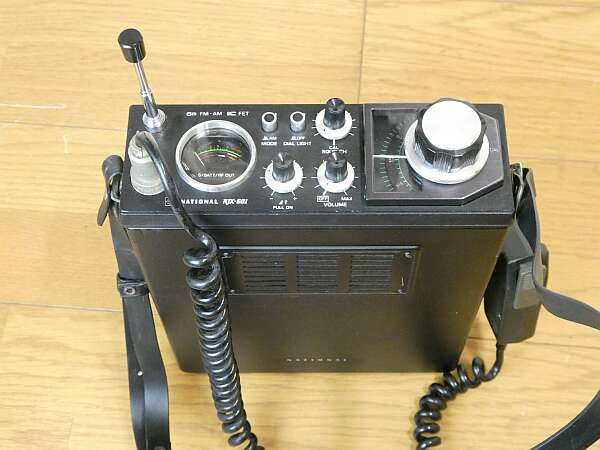
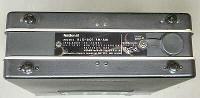
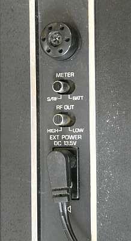
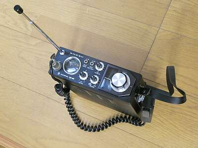
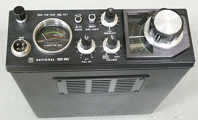
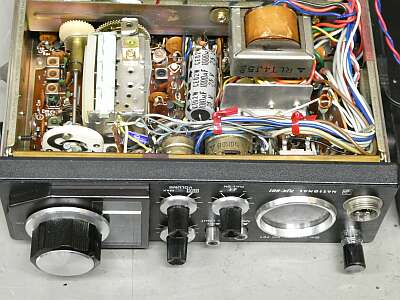
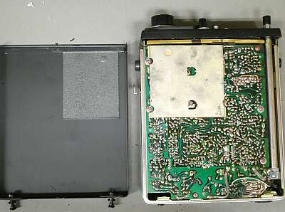
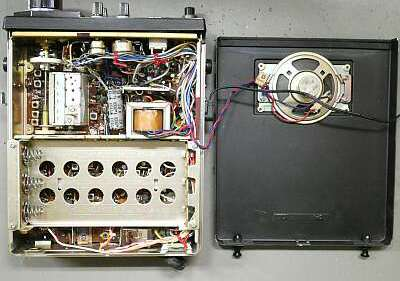
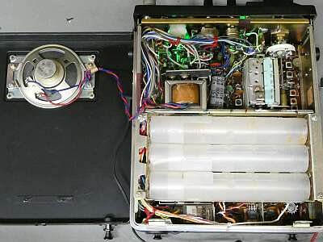

現在のＰａｎａｓｏｎｉｃも、あるときアマチュア無線機器を販売していました
松下電器産業ラジオ事業部、と記載があります
ここでご紹介するのは、１９７３年に発売された５０MHｚ帯携帯型トランシーバです
当時、５０ＭＨｚ帯はアマチュア無線入門バンドとして、中高校生を中心に賑わっていました
ＴＲＩＯ、ＩＣＯＭに続き、松下も参戦・・・でした
同じタイミングで、１４４ＭＨｚ帯１０W車載トランシーバ ＲＪＸ-２０２も発売されました
世間的には、これらの発売が、松下電器産業初のアマチュア無線分野への参入といわれているようですが、実際にはこれより１０年も前の１９６１年に動きがあって、それはＣＲＶ-１という受信機キットの発売で、こちらはラジオ事業部からではなく部品事業部からの発売でした
ＣＲＶ-１を見るとよく分かります、抵抗器・コンデンサ・バリコン・ＩＦトランス・スピーカー・真空管など、ほとんどの構成部品が、自社製品です
昨今のＰａｎａｓｏｎｉｃとは、ものづくりの感覚が全く異なります（部品事業部の製品という点もあるでしょう） |

幅１９０ 高さ６５ 奥行き２３０ 単位ｍｍ 本体重量２．２Ｋｇ
販売当初は、￥３４，０００ 販売終了時は、￥３７，０００ |
|
１９７５年ごろから、先行していた無線機器メーカーＴＲＩＯ、ＩＣＯＭは、５０ＭＨｚ帯もＳＳＢ化の方向に進みました
結果として、安価なＡＭ／ＦＭのトランシーバは、ＮＥＣ ＣＱＰ-６３００／６４００が残ったくらいで、価格の優位性もあり本機が長く生き残った、ということになります
最終的にモデルチェンジなしで約８年間にわたり販売されました
この業界では、異例と言えるくらいのロングセラーでしょう
この間、改良？が行われ、価格も段階的に値上げされました
機器構成
オールソリッドステート
送受信をひとつのＶＦＯで可能とします（送受完全トランシーブ）
受信は、１ｓｔＩＦ：２１ＭＨｚ、２ｎｄＩＦ：４５５ＫＨｚのダブルスーパーヘテロダイン方式を採用
２９～３３ＭＨｚと高い発振周波数のＶＦＯですから、安定度はそれなりです
ＦＭモードにもきちんと対応、ＡＭスロープ検波で・・・みたいな設計ではありません
スケルチも、本格的なノイズスケルチで、ＡＭ／ＦＭ両方に機能します
送信も、３Ｗと１Ｗに切り替え可能、電池運用を意識してあります
電池は、単二電池９本を内蔵、外部電源端子を有します
特別に目に付く機能とか性能は見あたりません、この時期ごく一般的な（真面目な）設計の５０ＭＨｚポータブル・トランシーバーかと思います |
|
 |
リアパネルは、極めてシンプル
外部アンテナ接続コネクタのみです
ゴムカバーが取り付いているところです
必要な外部接続端子などはサイドパネルに用意されています
|
 |
サイドパネルです
メーター切替
送信パワー切替
のスイッチが２個
そして、外部電源入力端子です |
 |
改めて、全体像です
移動は、この状態で持ち歩くことになります
総重量 約２．９Kgです |
 |
フロントパネルのアップです
シンプルですが、必要なものは全て機能します
ＶＦＯ目盛は、１００ＫＨｚ間隔であり、またダイヤルのバックラッシュもそれなりにあるため、周波数の読み取り精度は今一歩です |
 |
性能を決める大きな要素
ＶＦＯ／受信ＲＦ部です
ＲＦは２段増幅、実際高感度です |
 |
めったに蓋を開けることがないであろう側です
電池収容の反対側です
ご覧のように、構造は１枚基板です
シールド部は、上記ＶＦＯ／受信ＲＦ部の裏側です
|
 |
こちらが頻繁に開け閉めするであろう電池側です |
 |
電池がずれないように、３本ずつ一体化させるホルダー（電池チューブ？）が用意されています
結果、１．５Ｖ Ｘ ９本 １３．５Ｖがベース電圧です
ダイヤル照明が、緑LEDに改造されています |
|
入手時点で、大きなダメージはありません
ほぼ５０年選手ですから、使用感はそれなりにあります
が、内部は意外ときれいな状態でした
改造と思われるのが、バックライト・・・緑のＬＥＤが取り付いていました
その他よく分からない改造部分は、元に戻しました
マイクロホンも動作に問題はなく、肩掛けベルトも硬化はしていますが、まずまず綺麗です
作業は、もっぱら清掃でした |
|
|
最後にスペック・チェックです
送信 ４ＭＨｚ全体にわたり Ｈｉ：３Ｗ弱 Ｌｏ：１Ｗ強 ほぼスペック通りです
外部１３Ｖ電源使用時（芯：－です、要注意！）
受信 ＡＭ １．５μＶ入力で Ｓ／Ｎ１２ｄｂが得られました（スペックは１０ｄｂ以上）
ＦＭ １．０μＶ入力でＳ／Ｎ２２ｄｂ デビエーション±５ＫＨｚ時（スペックは２０ｄｂ以上）
ナロー対応済？（初期型は、±１５ＫＨｚ 当時のＦＭ-ＣＨは、４０ＫＨｚステップだった） |
|
本機ですが、付属のマイクロホンの形状から１９７４年以降の製品かと思われます
ナロー化への対応は、１９７６年からの実施だったと思います（この時点からＦＭ-ＣＨは、２０ＫＨｚステップに）
マーカーは、５１．０ＭＨｚでした（デフォルトは５０．０ＭＨｚだったはずです）
ＦＭ運用にあっては、呼び出し周波数である５１．０ＭＨｚにきちんと合わせることが重要ですから、ＦＭ運用をなさる方の改造かと思われます
２０１７年１２月実施の新スプリアス規定もクリアできるようで、例えばＪＡＲＤによる保証リストに掲載があります |